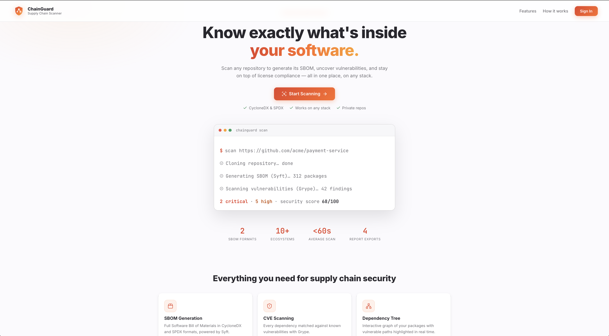
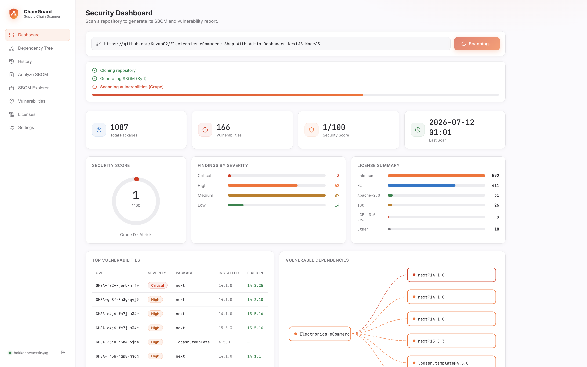
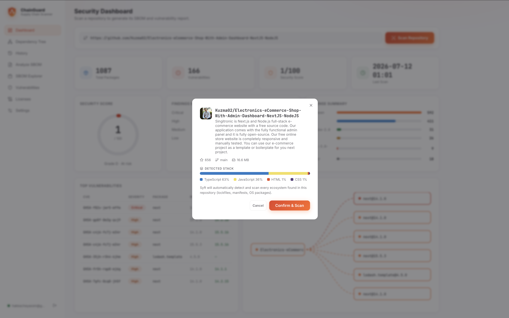
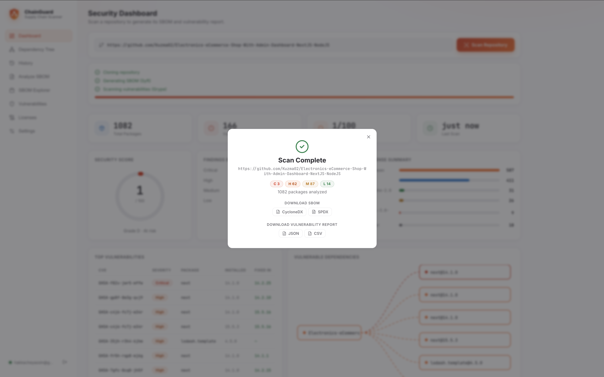
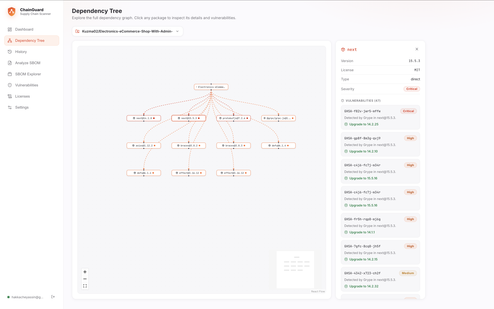
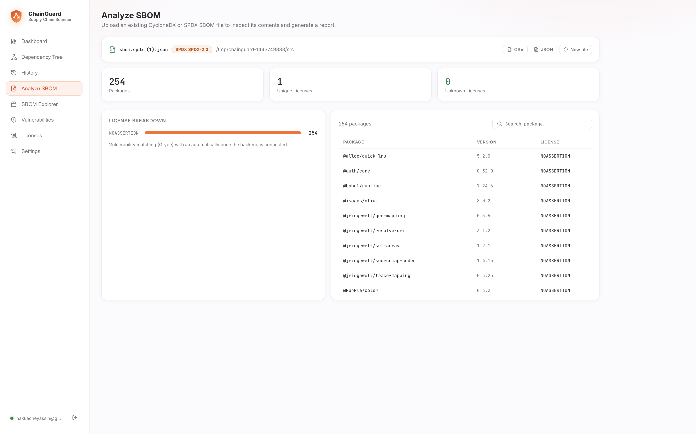
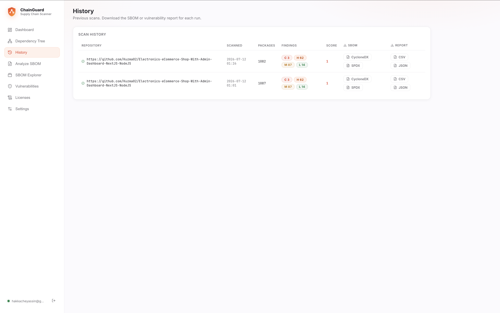
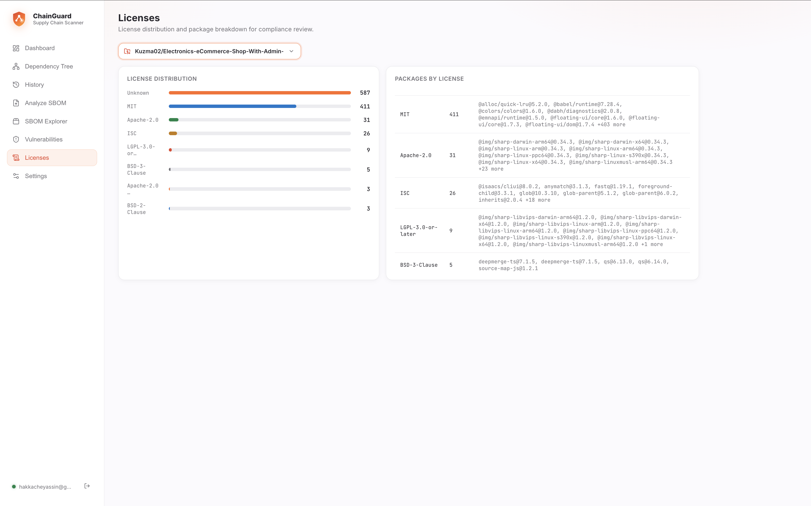
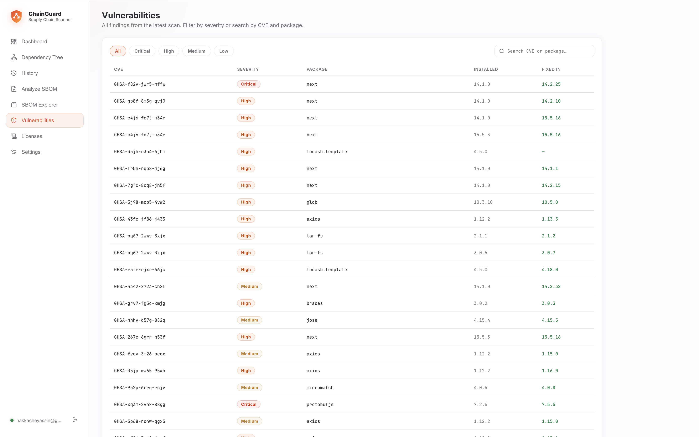

Supply Chain Security Scanner · Documentation
Scan any GitHub or GitLab repository to generate its SBOM, uncover vulnerabilities, and review license compliance — on any stack, automatically.
GitHub or GitLab, public or private (with a token).
Languages, stars and branch are detected automatically.
Clone → SBOM (Syft) → vulnerability scan (Grype).
CycloneDX, SPDX, JSON or CSV from the completion popup.








